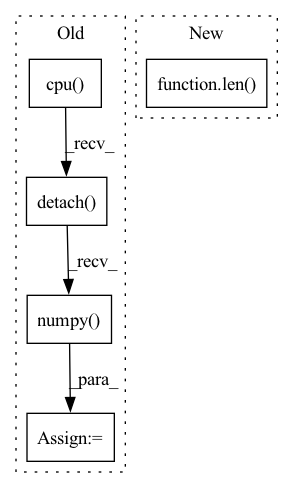

Pattern ID :4795

Before Change
print(" - Accuracy: ", acc)
else:
test_preds = results.view(-1, 2).cpu().detach().numpy()
test_truth = truths.view(-1).cpu().detach().numpy()
print(f"{emos[single]}: ")
test_preds_i = np.argmax(test_preds, axis=1)
test_truth_i = test_truth
f1 = f1_score(test_truth_i, test_preds_i, average="weighted")
acc = accuracy_score(test_truth_i, test_preds_i)
print(" - F1 Score: ", f1)
print(" - Accuracy: ", acc)
After Change
for emo_ind in range(4):
preds_i = np.argmax(preds[:, emo_ind], axis=-1)
truths_i = truths[:, emo_ind]
acc.append(torch.sum(truths_i == preds_i).item() / len(preds))
f1.append(f1_score(truths_i, preds_i, average="weighted"))
else:
preds = np.argmax(preds, axis=-1)
In pattern: SUPERPATTERN
Frequency: 3
Non-data size: 5
Instances
Fragment ID: 16936610
Project Name: wenliangdai/modality-transferable-mer
Commit Name: 67ce6293aea9ea344c51585fe2594faf8bc586fd
Time: 2020-06-09
Author: wenliang.dai.1995@gmail.com
File Name: src/evaluate.py
M Class Name: AnonimousClass
N Class Name: AnonimousClass
M Method Name: eval_iemocap(3)
N Method Name: eval_iemocap(3)
M Parent Class:
N Parent Class:
M File Name: src/evaluate.py
N File Name: src/evaluate.py
M Start Line: 47
M End Line: 70
N Start Line: 146
N End Line: 159
'>
Before Change
predicted_probs, predicted = self.get_predicted(outputs)
y_pred_probs += list(predicted_probs.cpu().detach().numpy())
y_pred += list(predicted.cpu().detach().numpy())
y_true += list(labels.cpu().detach().numpy())
After Change
//calculated_metrics[metric.name] /= len(y_true)
if criterion:
total_loss = total_loss / len(dataloader.dataset)
return (calculated_metrics, y_true, y_pred, y_pred_probs, total_loss)
def forward(self, *input, **kwargs):
'>
Fragment ID: 16936613
Project Name: biasvariancelabs/aitlas
Commit Name: 30b9944f7086274457283b8aeedc50d88e000e54
Time: 2020-10-29
Author: ivica.dimitrovski@gmail.com
File Name: aitlas/base/models.py
M Class Name: BaseModel
N Class Name: BaseModel
M Method Name: evaluate_model(4)
N Method Name: evaluate_model(4)
M Parent Class: nn.Module,Configurable
N Parent Class: nn.Module,Configurable
M File Name: aitlas/base/models.py
N File Name: aitlas/base/models.py
M Start Line: 179
M End Line: 217
N Start Line: 176
N End Line: 225
'>
Before Change
total_loss += batch_loss.item() * inputs.size(0)
predicted_probs, predicted = self.get_predicted(outputs)
y_pred = list(predicted.cpu().detach().numpy())
y_true = list(labels.cpu().detach().numpy())
self.running_metrics.update(y_true, y_pred)
After Change
predicted_probs, predicted = self.get_predicted(outputs)
// if segmentation reshape the predictions and labels
if len(predicted.shape) > 2:
predicted = predicted.T.reshape(predicted.shape[0] * predicted.shape[2] * predicted.shape[3], predicted.shape[1])
labels = labels.T.reshape(labels.shape[0] * labels.shape[2] * labels.shape[3], labels.shape[1])
self.running_metrics.update(predicted.type(torch.uint8), labels.type(torch.uint8))
'>
Fragment ID: 16936616
Project Name: biasvariancelabs/aitlas
Commit Name: e717447a11e0755178ba0a98c2e0561a98ae8eae
Time: 2021-03-07
Author: ivica.dimitrovski@gmail.com
File Name: aitlas/base/models.py
M Class Name: BaseModel
N Class Name: BaseModel
M Method Name: evaluate_model(4)
N Method Name: evaluate_model(4)
M Parent Class: nn.Module,Configurable
N Parent Class: nn.Module,Configurable
M File Name: aitlas/base/models.py
N File Name: aitlas/base/models.py
M Start Line: 200
M End Line: 210
N Start Line: 201
N End Line: 213